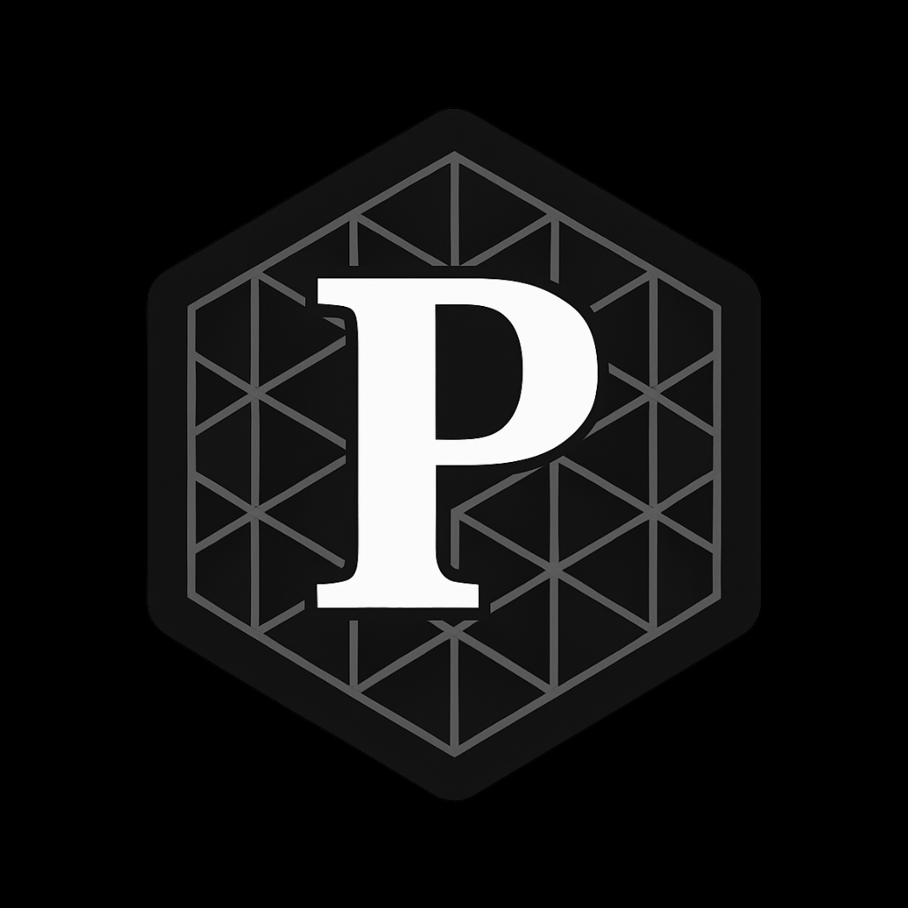

ProSynth Bio
🚀 The ProSynth Bio Manifesto
“Why the hell can an 8-year-old build a video game—but not cure cancer?”
Drug discovery should be as easy as coding a website.
But right now, biology is locked behind:
- paywalls
- PhDs
- billion-dollar labs
I’m done waiting.
I’m building ProSynth Bio — the Cure-Anything Copilot.
Tools so simple that even an 8-year-old could cure cancer.
Here’s What I’ve Already Built:
- ProtBERT transforms protein sequences into math.
- Search tools to discover which molecules look alike.
- 3D protein structures spinning live in your browser.
Cool. But that’s just the sandbox.
Here’s Where I’m Going Next:
- Mining papers and patents with BioBERT — so you know every discovery and legal landmine before you even start.
- Generating new proteins and peptides with ProtGPT2 — therapeutics no human’s ever typed out before.
- Predicting how molecules fold and bind with AlphaFold and docking.
- Suggesting your next experiments automatically — so you don’t waste months on dead-end assays.
“Biology shouldn’t be an exclusive club for pharma giants. It should be a playground for everyone — even cracked high schoolers hacking proteins at 2am.”
I’m Looking for the Cracked Ones:
- High schoolers who want to build the next drug company.
- College students sick of waiting for a PhD to innovate.
- Indie labs running bio moonshots on ramen budgets.
Because biotech’s future belongs to the rebels, the dreamers, and the cracked builders who refuse to wait for permission.
Want In?
Drop your email below — and tell me the craziest thing you’ve ever built.
Join the Movement